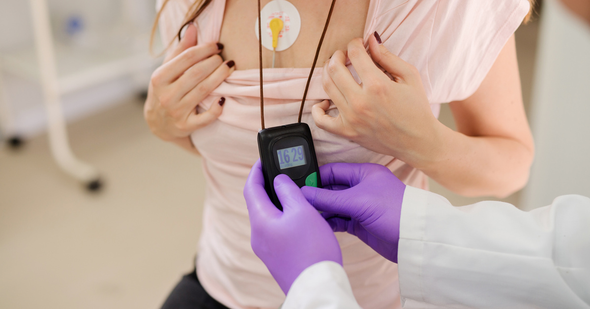

Holter Monitoring
Continuous short-window recording. Clinical results after the final report is generated. Minimal patient interaction beyond symptom documentation.

Ambulatory Cardiac Monitoring
Ambulatory cardiac monitoring records the heart’s electrical activity while the patient continues normal daily life outside the clinic or hospital. The category includes Holter monitoring, extended Holter monitoring, cardiac event monitoring, and mobile cardiac telemetry. Each test provides a different balance of monitoring duration, data transmission, event capture, notification timing, patient involvement, and reporting.
An ECG performed in the office captures only a brief period. Ambulatory monitoring extends the observation window and may help the physician evaluate intermittent symptoms or rhythm patterns that are not present during a standard ECG. The ordering provider selects the modality based on the clinical question and expected event frequency.
Continuous short-window recording. Clinical results after the final report is generated. Minimal patient interaction beyond symptom documentation.
Extended continuous recording for intermittent symptoms. Clinical results after the final report is generated. Adherence and electrode care matter more over multiple days.
Episodic capture triggered by the patient, the device, or both. Qualifying findings presented during the test according to the prescribed notification protocol.
Continuous remote rhythm surveillance with in-progress presentation of qualifying findings according to protocol. Requires the connected phone near the patient.
Every Specialized Medical test provides LIVE test-status visibility while the study is in progress. Specialized Medical can see operational information such as battery level, electrode contact and signal quality, whether the monitor is communicating, and whether the patient appears to remain properly connected. When a parameter falls outside the expected range, Specialized Medical contacts the patient and works with the patient to correct the issue so the study has the best opportunity to be completed successfully. The distinction between test types is not whether the study is visible live; it is when clinical findings are presented. For Holter and Extended / Long-Term Holter, clinical results are presented after the final report is generated. For Event Monitoring and Mobile Cardiac Telemetry (MCT), qualifying clinical findings are presented while the test is in progress according to the prescribed notification protocol.
| Monitoring Type | Typical Duration | LIVE Test-Status Visibility | Clinical Findings Presented | Best Suited For |
|---|---|---|---|---|
| Holter Monitoring | 24–48 hours | Yes | After Final Report Is Generated | Frequent symptoms and short-term rhythm assessment |
| Extended / Long-Term Holter | 3–14 days | Yes | After Final Report Is Generated | Intermittent symptoms requiring a longer recording window |
| Cardiac Event Monitoring | Up to 30 days | Yes | During Test — According to Prescribed Notification Protocol | Intermittent symptoms that may require patient or automatic event capture |
| Mobile Cardiac Telemetry (MCT) | Up to 30 days | Yes | During Test — According to Prescribed Notification Protocol | Patients who may benefit from continuous remote rhythm surveillance |
This guide helps you find the right page; it is not a diagnostic questionnaire. The ordering provider selects the test.
In general terms, ambulatory monitoring can support evaluation of heart rate, rhythm, pauses, ectopy, tachyarrhythmias, bradyarrhythmias, symptom correlation, and rhythm burden. Not every monitor or report contains every measurement — content depends on the prescribed study and reporting configuration.
Why recording quality matters
Movement, poor electrode contact, skin preparation, loose leads, and environmental factors can produce artifact and affect signal quality. Good adherence and electrode care give the study the best opportunity to produce interpretable data.
The physician remains responsible for diagnosis, interpretation, and treatment decisions.
Evaluation factors include supported modalities, connectivity, patient support, report quality, workflow fit, physician access, electronic signature, implementation support, turnaround, and escalation procedures.
Specialized Medical supports all four modalities through one coordinated program with practical workflow design and physician-ready reporting. Practices can start with a program review or see how implementation works for cardiology practices.
It means recording ECG information while the patient is outside the hospital or clinic and continuing normal daily activities.
Common options include Holter monitors, extended Holter monitors, event monitors, and mobile cardiac telemetry.
There is no single best monitor for every patient. The ordering provider selects the test based on symptoms, event frequency, duration, and the need for live transmission.
No. Diagnostic yield depends on whether the rhythm occurs during the study, recording quality, adherence, and other clinical factors.
All modalities provide LIVE operational visibility while the study is in progress. MCT and Event Monitoring can present qualifying clinical findings during the test according to protocol. Traditional and Long-Term Holter clinical results are presented after the final report is generated.
It is the comparison of the patient’s recorded symptoms with the ECG rhythm at the same time.
Travel should be discussed with the ordering practice because connectivity, device care, charging, and return logistics may be affected.
Movement, poor electrode contact, skin preparation, loose leads, and environmental factors can affect signal quality.
Results are delivered through the configured reporting workflow for physician review and interpretation.
No. Patients with urgent symptoms should seek emergency care according to their physician’s instructions.
Specialized Medical can review the practice’s current ambulatory cardiac monitoring workflow, explain the available service options, and demonstrate how enrollment, monitoring, reporting, and physician review can be configured.
Prefer to talk? Speak With a Cardiac Monitoring Specialist — 1-855-SPEC-MED (1-855-773-2633)
Diagnostic Service Disclaimer: Specialized Medical provides ambulatory cardiac monitoring services and diagnostic information for review by qualified healthcare providers. The service does not replace physician judgment, emergency medical services, or instructions to call 911 when urgent symptoms occur.